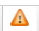

The Recruiter access is divided into regions. The Search region and the Participants list allow you to manage your new hire, rehire and transfer participants. In addition, you can conduct the following functions from the Participants list area:
Add candidate demographic information into ReadySet.
Schedule and reschedule candidate appointments.
Check progress of the candidate’s onboarding process.
Monitor alerts of candidate EHS hiring decision.
No PHI is available to the Recruiter.
The Recruiter/HR can also process rehires and transfers.
The processes that a Recruiter/HR uses within ReadySet are determined in conjunction with the facility's EHS clinic, workflow, and policies.
Creating a New Participant Record or Processing Rehires and Transfers
You can create a new participant record, or process a rehire or transfer from the Participants list.
Creating a New Participant Record
Loginto ReadySet and click the Recruiter tab. The screen will display the list of candidates currently in the hiring process.
Click New Participant to create a demographic record for the new participant; this opens the New Employee window.
Complete all required fields marked with an “*”:
FIRST NAME *
LAST NAME *
DATE OF BIRTH *
SSN *
ADDRESS *
CITY *
STATE *
ZIP CODE *
ACTIVE *
SSN *
OTHER IMPORTANT FIELDS
DATE OF HIRE(EXPECTED)
PHONE NUMBER
MESSAGE PREFERENCE
Click Save or, if the Recruiter is also scheduling the Pre-Placement Appointment, then click Save and Schedule Exams. See below for the steps to schedule an appointment. The system does a cross-check on the SSN. If a match is found it will state that a record already exists for this participant; this will only occur if the candidate is already in the ReadySet data base. This person is most likely a rehire or a job transfer. See the next section for instructions on processing a rehire or job transfer.
Optional: Print the demographic information and give it to the candidate along with the Call to Action letter. The candidate will use this information to create an account (Username and Password). They must enter the demographic information exactly as the Recruiter/HR has entered in the system to successfully create an account.
Processing Rehires and Transfers
Click Search for Others in the upper right of the screen to search the database for the rehire or transfer candidate.
Select the candidate by clicking Edit. This will open the Employee Demographic screen.
Confirm that the existing information is correct, and add data in other important fields (see table above).
In the Recruiter Status field, select the appropriate option: Rehire or Transfer.
Click Save.
The above steps will allow the Recruiter/HR person to schedule an appointment, track the progress, and view the final assessment.
Scheduling the Pre-Placement Appointment
The Recruiter/HR can schedule the appointment as soon as the Participant record has been created, or schedule it later.
If you have just created the candidate’s demographic record, you can click Save and Schedule Exams, and then follow the instructions below starting with step 9.
Log in to ReadySet. The screen will display the list of candidates currently in the hiring process.
Search for the candidate’s record by using the Search option on the left side of the screen.
Enter the Last Name and a portion of the First Name in the appropriate fields, then click Search. This will display the candidate’s record to the right.
Do one of the following:
Click the Edit Record icon to open the candidate’s record. This will display the Edit Employee window.
Click the Schedule icon next to the Edit record icon and go to Step 9.
Click the Appointment tab.
Click New Appointment to access the Schedule Exams window.
Select the appropriate Visit Type.
Select the checkbox(es) to select the items to schedule.
Select the appropriate Clinic Location for the Pre-Placement appointment per your policies.
Click in the Contact drop-down to display the list of Clinical Calendars at the selected Clinic location. This may vary depending on your system configuration.
Select the Calendar picker.
Select the Date and Time for the appointment and select the grey time bar, this takes you back to the Schedule Exams window.
Click Submit to return to the Participants window. The Appointment Date column displays the date of the scheduled appointment. This also posts the appointment information for EHS Clinician and participant to view from their systems.
Checking the Progress of the Candidate Surveys
The Recruiter/HR may want to check if the candidate has completed their health surveys before the Pre-Placement Exam. Typically, EHS needs the candidate’s health surveys to be completed before they conduct the exam.
Log into ReadySet. The screen will display the list of candidates currently in the hiring process.
Searchfor the candidate’s record by using the Search option on the left side of the screen.
Click the Edit icon to display the candidate’s record.
Select the Survey Status tab to view the candidate’s surveys. The status of all the candidate’s surveys displays. If a green check mark displays, then the survey is complete and submitted. If it displays Incomplete, then the candidate has not completed the survey.
Checking the Hiring Status
The Recruiter/HR will need to check the hiring status of each candidate. You can view all your pending candidate assessments as follows:
Log into ReadySet. The screen will display the list of candidates currently in the hiring process.
You can Search for a specific candidate using Search in the left menu, or view All Candidate’s Assessments by using the Sort option on the Assessment column in the Participants window.
Click on the Assessment field to display the sort options.
Click Sort Ascending. This will group the candidates and their assessment in alphabetical order of:
PASSED HEALTH ASSESSMENT
PASSED WITH ACCOMMODATIONS
MEDICAL HOLD
HOLD: DRUG SCREEN PENDING
DID NOT PASS HEALTH ASSESSMENT
DID NOT PASS DRUG SCREEN
NOT APPLICABLE
The application allows for both primary alerts (Assessment column) and secondary alerts (Alert column) to display. The column with the Alert symbol

will display the number of alerts associated with this candidate based on your clinical requirements for hiring.
Candidates with a blank assessment indicate the EHS provider has not completed the overall Health Assessment Summary. You can view the candidate’s progress in the Appointment tab under Edits. This displays the charting forms ordered and if in Ready or Complete status.
Clearing Alerts from Your Participants List
When the hiring decision has been made, the Recruiter/HR will need to clear the alerts from the Participants list.
If Participant is Cleared for Hire:
Log into ReadySet. The screen will display the list of candidates currently in the hiring process.
Search for a specific candidate using the Search in the left menu.
Click Edit to open the record.
Select the appropriate Population Type. For example 'Volunteer'
Click Save and continue the process.
Select the checkbox(es) next to the participant record(s).
Click Dismiss at the top of the Participant window. The selected records are removed from the list.
When the notification is dismissed, the Recruiter Status will reset to the default of blank.
You can view dismissed participant records by selecting the Show Dismissed checkbox.
If Participant is Not Cleared to Hire
Log into ReadySet. The screen will display the list of candidates currently in the hiring process.
Searchfor a specific candidate using the Search in the left menu.
Click the Edit icon to display the Participant record. This will open the Edit EmployeeDetailtab.
Change the Active field to "No" to make the record Inactive.
In the Employment Status field, select "Terminated".
Click Save.
Reschedule or Cancel an Appointment
Recruiters can reschedule appointments but cannot cancel appointments. We recommend that if either of these instances occurs, the Recruiter should contact the EHS Clinic to inform them of any changes to an appointment.
To Reschedule an Appointment
Log in to ReadySet. The screen will display the list of candidates currently in the hiring process.
Search for the candidate’s record by using the Search option in the left menu. This will display the candidate’s record to the right.
Click the Edit Record icon to open the candidate’s record. This will display the Edit Employee window.
Click the Appointment tab.
Select the appointment to be rescheduled (in the left column). This will display the appointment information.
Click the Calendar Picker icon in the Appointment date and time header at the end of the line. This will display the Reschedule Exams dialog box.
Change the clinic Location if necessary.
Change the Provider if necessary.
Select the Calendar picker.
Select the Date and Time for appointment and select the grey time bar, this takes you back to the Reschedule Exams window. You can also view multiple calendars by selecting them from the list on the left.
Click Save to return to the Appointments window. The Appointment Date column displays the date of the rescheduled appointment. This also posts the appointment information for EHS Clinician and participant to view from their systems.
To Cancel an Appointment
Recruiters do not have the ability to cancel an appointment. You should follow your agreed process with the EHS Clinic. The Recruiter can call or email the EHS staff that the appointment is being cancelled or the candidate can directly contact the EHS staff to cancel.